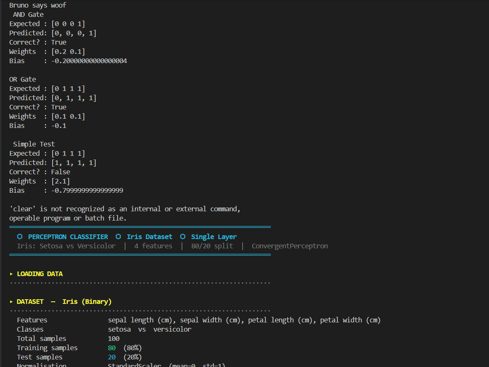
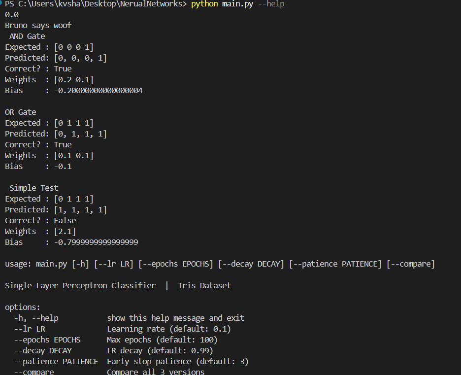
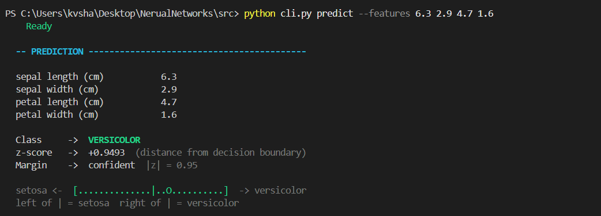
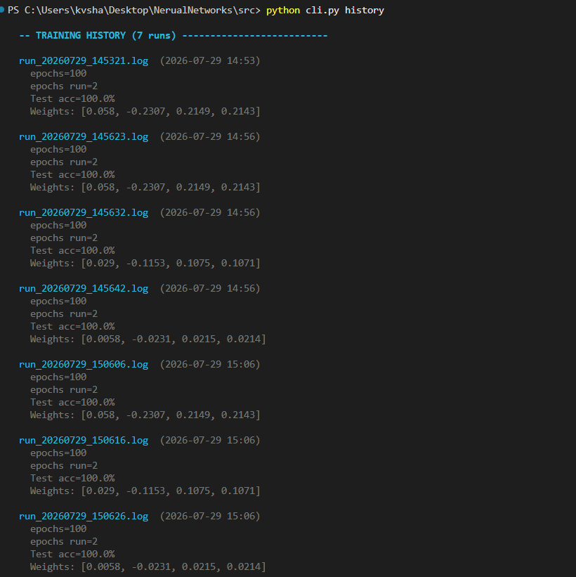
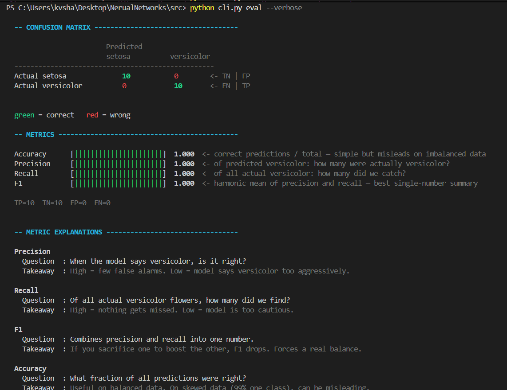

NEURAL NETWORKS
AND PERCEPTRONS
Contents
A progression from the mathematical foundations of a perceptron to a usable command line machine learning tool.
Project Overview
The project began with a simple question: how does one artificial neuron actually learn a decision?
Neural networks are computational models that learn patterns and relationships from data. Although they are loosely inspired by biological neurons, their operation is mathematical. Inputs are transformed through weighted calculations, activation functions and learned parameters to produce an output such as a classification.
My work began with the perceptron, one of the simplest artificial neurons. I first implemented and tested it on binary logic problems such as AND and OR, then used XOR to understand why a single linear decision boundary is sometimes insufficient. The project was gradually extended to a real dataset, improved training behaviour, manual evaluation metrics, model persistence, experiment tracking and a structured command line interface.
Project Evolution
Neural Network Fundamentals
A neural network is built from simple computational units whose real power comes from how they are connected and trained.
2.1 What is a Neural Network?
A neural network consists of interconnected artificial neurons organised into layers. The input layer receives the original features, hidden layers learn intermediate representations, and the output layer produces the final prediction.
Biological neuron
Receives signals through dendrites, processes them in the cell body and transmits an output through the axon. Learning involves changes in connection strength.
Artificial neuron
Receives numerical inputs, multiplies them by weights, adds a bias, applies an activation function and produces a numerical output.
2.2 Weights, Bias and Activation
Weights determine how strongly each feature influences the model. Bias is an additional learnable parameter that shifts the decision boundary, preventing it from being forced through the origin. An activation function converts the weighted sum into the neuron's output.
2.3 Training and Inference
During training, labelled examples are shown to the model and its parameters are adjusted in response to errors. During inference, the learned parameters remain fixed and are used to predict outputs for new inputs.
Understanding the Perceptron
A perceptron turns a weighted combination of inputs into a binary decision.
3.1 Perceptron Operation
The perceptron calculates a weighted sum and applies a step activation function. If the result lies above the threshold, the output is 1; otherwise it is 0.
3.2 Learning Rule
For each training sample, the prediction is compared with the expected output. A misclassification produces an error that is used to update the weights and bias.
w = w + η × error × x
b = b + η × errorη is the learning rate, controlling the size of each update.
3.3 Initial Logic Gate Experiments
AND Gate
| x₁ | x₂ | y |
|---|---|---|
| 0 | 0 | 0 |
| 0 | 1 | 0 |
| 1 | 0 | 0 |
| 1 | 1 | 1 |
OR Gate
| x₁ | x₂ | y |
|---|---|---|
| 0 | 0 | 0 |
| 0 | 1 | 1 |
| 1 | 0 | 1 |
| 1 | 1 | 1 |
Both AND and OR are linearly separable, so the perceptron can learn a straight decision boundary that separates their two output classes.
3.4 Single Layer and Multi Layer Perceptrons
A Single Layer Perceptron contains no hidden layer and is restricted to linear decision boundaries. A Multi Layer Perceptron introduces one or more hidden layers and nonlinear activation functions, allowing the network to represent more complex relationships.
The XOR Problem and Multi Layer Perceptrons
XOR showed that some failures cannot be fixed by simply training longer.
| Input 1 | Input 2 | XOR Output |
|---|---|---|
| 0 | 0 | 0 |
| 0 | 1 | 1 |
| 1 | 0 | 1 |
| 1 | 1 | 0 |
4.1 MLP Experiment for XOR
To study how hidden layers overcome this limitation, I implemented a small Multi Layer Perceptron with the structure 2 inputs → 3 hidden neurons → 1 output. Each hidden neuron can learn a different intermediate boundary, and the output neuron combines these representations into a nonlinear decision.
4.2 Forward Propagation
z₂ = a₁W₂ + b₂ → ŷ = σ(z₂)
The sigmoid activation function maps values between 0 and 1 and, more importantly, introduces nonlinearity between layers.
4.3 Backpropagation
After a forward pass, the prediction is compared with the expected output. Backpropagation traces the effect of this error backwards through the network and computes gradients for the parameters.
The XOR network was trained for 20,000 epochs during the experiment and converged to outputs close to the expected binary values. The purpose of the repeated passes was to iteratively improve the parameters, not simply to memorise four answers.
Moving from logic gates to Iris
Once the perceptron behaviour was understood on tiny examples, the next step was a real binary classification pipeline.
The Iris dataset was filtered to two classes, setosa and versicolor, producing 100 samples suitable for a single layer perceptron. Each flower is represented using four numerical features.
| Feature | Role |
|---|---|
| Sepal length | Input feature |
| Sepal width | Input feature |
| Petal length | Input feature |
| Petal width | Input feature |
5.1 Train and Test Split
The 100 samples are divided into 80 training samples and 20 testing samples. The training set is used to learn the model parameters, while the test set is reserved for evaluation on unseen examples.
5.2 Standardisation
Improving the training process
The original perceptron was extended so that training could be observed, controlled and compared instead of running as an opaque loop.
Error Tracking
Misclassifications are recorded per epoch to show whether the model is moving toward convergence.
Best Weight Tracking
The model can preserve the parameters associated with its best observed performance rather than assuming the final epoch is best.
Learning Rate Decay
The learning rate can shrink as training progresses, allowing larger early updates and smaller later adjustments.
Early Stopping
Training can stop after a configured number of consecutive perfect epochs instead of always using the maximum epoch count.
6.1 Interactive Training Interface
The terminal interface brings the dataset configuration, hyperparameters, training progress, accuracy, learning curve and sample predictions into a single workflow. It also allows retraining with different hyperparameters.

Development of the Command Line Workflow
As the project grew, separate experiments were reorganised into a git-style command line interface.
python cli.py train python cli.py predict --features 6.3 2.9 4.7 1.6 python cli.py eval --verbose python cli.py history python cli.py info

7.1 Prediction
New flower measurements can be passed directly to the saved classifier. Before inference, the sample is standardised using the same training statistics. The CLI also displays a prediction margin, which indicates the sample's position relative to the learned decision boundary.

7.2 Model Persistence
Separating training from prediction introduced a practical requirement: the learned model had to survive after the training process ended. The saved model therefore contains the learned weights, bias, feature means, feature standard deviations and relevant metadata.
7.3 Experiment History
Training runs are logged so that hyperparameters, epochs, accuracy and learned weights can be compared across sessions. This makes experimentation reproducible instead of losing previous configurations after each run.

Model Evaluation and Results
The evaluation stage was implemented manually so that each metric could be understood from the underlying confusion matrix rather than treated as a library output.

8.1 Observed Results
| Predicted Setosa | Predicted Versicolor | |
|---|---|---|
| Actual Setosa | 10 | 0 |
| Actual Versicolor | 0 | 10 |
The model correctly classified all 20 samples in this particular test split. This result should be interpreted in context. Setosa and Versicolor are comparatively easy to separate and the test set is small. The result demonstrates that the perceptron learned this binary task successfully, not that a single perceptron would achieve perfect performance on arbitrary datasets.
8.2 Technology Stack
| Technology | Purpose |
|---|---|
| Python | Main implementation language |
| NumPy | Numerical operations and perceptron implementation |
| scikit-learn | Iris loading, splitting and preprocessing |
| argparse | Command line interface |
| PowerShell / Terminal | Running and testing the CLI |
The classifier and evaluation metrics are implemented manually. scikit-learn is used for supporting data operations rather than as the classifier itself.
Learnings, limitations & future scope
9.1 Key Learnings
- A perceptron is fundamentally a weighted decision function rather than a black box.
- Weights, bias and the activation rule together determine the decision boundary.
- A single layer perceptron is fundamentally restricted to linear separation.
- XOR demonstrates why hidden layers and nonlinear activation functions are necessary.
- Training behaviour depends on learning rate, convergence, preprocessing and stopping conditions.
- Preprocessing must remain consistent between training and inference.
- Accuracy alone does not fully describe classifier behaviour, which motivates precision, recall, F1 and confusion matrices.
- Persistence and experiment logging turn an isolated model into a repeatable workflow.
9.2 Current Limitations
The main classifier remains a Single Layer Perceptron, so its decision boundary is linear. It is currently designed for binary classification and its strong Iris result is specific to the selected classes and split. More complex, nonlinear relationships require a different architecture.
9.3 Future Scope
- Develop a Multi Layer Perceptron from scratch.
- Implement forward propagation and backpropagation for multiple layers.
- Experiment with additional nonlinear activation functions.
- Extend the system to nonlinear and multiclass classification tasks.
- Add automated unit tests for model behaviour and manually implemented metrics.
- Compare the from-scratch implementation with standard machine learning libraries.
Conclusion
The perceptron was not the end goal. It was the starting point for understanding why deeper networks are needed at all.
The project began by implementing the basic mechanics of an artificial neuron: weighted inputs, bias, activation and parameter updates. AND and OR provided simple problems on which the learning rule could be verified. XOR then exposed the architectural limitation of a single linear decision boundary and motivated the study of hidden layers, nonlinear activation and backpropagation.
The same foundation was then carried into a real binary classification task using the Iris dataset. The implementation grew progressively to include standardisation, convergence tracking, learning rate decay, early stopping, manual evaluation metrics, model persistence, predictions, experiment history and a structured command line interface.
As a result, the final system represents more than a single perceptron script. It documents the progression from understanding the mathematics of one artificial neuron to building a complete and reusable machine learning workflow, while keeping the limitations of the current architecture visible.
References
Add the course PDF, textbooks, documentation and any other sources actually consulted during the project here, using the citation format required by PES University.